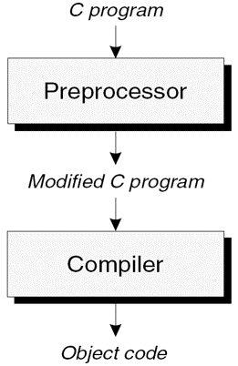

#define和#include这类的指令都是由预处理器处理的, 这是一个在编译之前处理C程序的软件.
C(和C++)因为依赖预处理器而不同于其他的编程语言.
预处理器是一个强大的工具, 但也可能是难以发现的错误的来源.
预处理器查找以#字符开头的预处理指令.
我们之前遇到过#define和#include指令.
#define定义了一个宏, 一个代表其他东西的名称, 例如常量.
通过存储宏的名称及其定义来响应#define指令.
当这个宏被使用时, 预处理器"扩展"宏, 将其替换为定义值.
#include告诉预处理器将特定文件里的内容作为正在编译的文件的一部分"包含"进来.
例如, 代码行
#include <stdio.h>
指示预处理器打开名为stdio.h的文件并将其内容加入程序.
预处理器在编译过程中的作用:

预处理器的输入是一个 C 程序, 可能包含指令.
预处理器执行这些指令, 在处理过程中删除它们.
预处理器的输出直接交给编译器.
原来的celsius.c程序:
/* Converts a Fahrenheit temperature to Celsius */
#include <stdio.h>
#define FREEZING_PT 32.0f
#define SCALE_FACTOR (5.0f / 9.0f)
int main(void)
{
float fahrenheit, celsius;
printf("Enter Fahrenheit temperature: ");
scanf("%f", &fahrenheit);
celsius = (fahrenheit - FREEZING_PT) * SCALE_FACTOR;
printf("Celsius equivalent is: %.1f\n", celsius);
return 0;
}
–
预处理后的程序:
空行
空行
从stdio.h中引入的行
空行
空行
空行
空行
int main(void)
{
float fahrenheit, celsius;
printf("Enter Fahrenheit temperature: ");
scanf("%f", &fahrenheit);
celsius = (fahrenheit - 32.0f) * (5.0f / 9.0f);
printf("Celsius equivalent is: %.1f\n", celsius);
return 0;
}
–
预处理器不仅仅执行指令, 还用单个空格字符替换每个注释.
一些预处理器还会删除不必要的空白字符, 包括每一行开始用于缩进的空格和制表符.
在 C 语言的早期, 预处理器是一个单独的程序.
如今, 预处理器往往是编译器的一部分, 它的一些输出可能不一定是 C 代码.
尽管如此, 将预处理器与编译器分开是很有用的.
大多数 C 编译器都提供了一种查看预处理器输出的方法.
某些编译器在指定某个选项时生成预处理器的输出(GCC使用-E选项).
其他的编译器会提供一个类似于集成的预处理器的独立程序.
注意: 预处理器对 C 的了解有限.
因此, 它在执行指令时很可能产生非法的程序.
对于复杂的程序, 检查预处理器的输出可能有助于定位这种错误.
大多数预处理指令属于以下三类之一:
宏的定义: #define指令定义一个宏; #undef指令删除一个宏定义.
文件包含: #include指令使指定文件的内容包含在程序中.
条件编译: #if、#ifdef、#ifndef、#elif、#else和#endif指令允许将文本块包含在程序中或从程序中排除.
有几条规则适用于所有指令.
指令都以#符号开始. #符号不必位于行首, 只要它前面只有空格即可.
指令的符号之间可插入任意数量的空格或水平制表符. 例如:
# define N 100
–
指令总是在第一个换行符处结束, 除非明确地指明继续.
要将指令延续到下一行, 必须以\字符结束当前行:
#define DISK_CAPACITY (SIDES * \
TRACKS_PER_SIDE * \
SECTORS_PER_TRACK * \
BYTES_PER_SECTOR)
–
指令可以出现在程序的任何位置
但通常将#define和#include指令放在文件的开头, 其他指令放在后面.
注释可以与指令放在同一行
在宏定义的末尾添加注释是一种很好的做法:
#define FREEZING_PT 32.0f /* freezing point of water */
–
从第 2 章开始使用的宏被称为简单的宏, 因为它们没有参数.
预处理器还支持带参数的宏.
简单的宏(对象式宏)的定义:
#define 标识符 替换列表
替换列表是预处理标记序列. 可以包括标识符、关键字、数字常量、字符常量、字符串字面量、操作符和排列.
无论标识符稍后出现在文件中的何处, 预处理器都会用替换列表替换它.
宏定义中的任何额外符号都将成为替换列表的一部分.
将=符号放在宏定义中是一个常见错误:
#define N = 100 /*** WRONG ***/
…
int a[N]; /* becomes int a[= 100]; */
–
用分号结束宏定义是另一个常见的错误:
#define N 100; /*** WRONG ***/
…
int a[N]; /* becomes int a[100;]; */
编译器可以检测由宏定义中的额外符号引起的大多数错误.
但是, 编译器只会将宏的每次使用标记为不正确, 而不会直接找到错误的根源–宏定义.
简单的宏主要用于定义"明示常量" – 代表数字、字符和字符串值的名称:
#define STR_LEN 80
#define TRUE 1
#define FALSE 0
#define PI 3.14159
#define CR '\r'
#define EOS '\0'
#define MEM_ERR "Error: not enough memory"
–
使用#define为常量创建名称的优点:
程序更易读 宏的名称可以帮助读者理解常量的含义.
程序更易于修改 可以通过修改单个宏定义来更改整个程序中常量的值.
可帮助避免前后不一致或键盘输入错误 如果像 3.14159 这样的数字常量在程序中多次出现, 很可能偶尔会被意外写成 3.1416 或 3.14195.
简单的宏还有其他用途.
对C语法做小的修改
宏可以作为 C 符号的替代名称:
#define BEGIN {
#define END }
#define LOOP for (;;)
改变C的语法通常不是好主意, 它会使程序更难被其他人理解.
对类型重命名
第 5 章的一个例子(类型定义是更好的选择):
#define BOOL int
控制条件编译
宏在控制条件编译中发挥重要作用, 表明"调试模式"的宏:
#define DEBUG
–
当宏用作常量时, C 程序员习惯将其名称中的所有字母大写.
但是, 对于如何将用于其他目的的宏大写并没有达成共识.
一些程序员喜欢全部使用大写字母来引起对宏的注意.
其他人更喜欢小写名称, 遵循 K&R 的风格.
带参数的宏(函数式宏)的定义:
#define 标识符(x1, x2, …, xn) 替换列表
x1, x2, …, xn是标识符(宏的参数).
参数可根据需要在替换列表中出现任意次.
宏的名称和左括号之间没有空格. 如有空格, 预处理器会将(x1, x2, …, xn)视为替换列表的一部分.
当预处理器遇到带参数的宏定义时, 会将定义存储起来以备后用.
在后面程序出现标识符(y1, y2, ..., yn)格式的宏调用, 预处理器会将其替换为替换列表, 将y1, y2替换为x1, x2, 依此类推.
带参数的宏通常用作简单的函数.
带参数的宏的示例:
#define MAX(x,y) ((x)>(y)?(x):(y))
#define IS_EVEN(n) ((n)%2==0)
/* 这些宏的调用 */
i = MAX(j+k, m-n);
if (IS_EVEN(i)) i++;
预处理器会将6-7行替换为:
i = ((j+k)>(m-n)?(j+k):(m-n));
if (((i)%2==0)) i++;
–
一个更复杂的函数式宏:
#define TOUPPER(c) \
('a'<=(c)&&(c)<='z'?(c)-'a'+'A':(c))
<ctype.h>头文件提供了名为toupper的函数, 它的可移植性更好.
带参数的宏可以包含空的参数列表:
#define getchar() getc(stdin)
空的参数列表不是必需的, 但这样使getchar更像一个函数.
使用带参数的宏替代真正的函数有两个优点:
程序可能会稍微快些 在程序执行期间调用函数通常需要一些开销, 但调用宏不需要.
宏更"通用" 只要预处理后的程序是合法的, 宏可以接受任何类型的参数.
带参数的宏也有缺点.
编译后的代码通常会更大 每个宏调用都会增加源程序的大小.
嵌套宏调用时, 问题变得更加复杂:
n = MAX(i, MAX(j, k));
预处理后的语句:
n = ((i)>(((j)>(k)?(j):(k)))?(i):(((j)>(k)?(j):(k))));
–
宏参数没有类型检查
调用函数时, 编译器会检查每个参数的类型.
预处理器不会检查宏参数, 也不会对其进行类型转换.
无法用一个指针来指向宏
C允许指针指向函数, 这在特定的编程条件下非常有用.
宏在预处理期间被删除, 因此没有相应的"指向宏的指针".
宏可能会多次计算其参数
如果参数有副作用, 可能会发生意外行为:
n = MAX(i++, j);
/* 预处理后 */
n = ((i++)>(j)?(i++):(j));
如果i大于j, 那么i将(错误地)自增两次, 并且n将被赋错误的值.
由多次计算宏的参数引起的错误很难定位, 因为宏调用与函数调用看起来相同.
更糟糕的是, 这类宏可能在大多数情况下都能正常工作, 仅在特定参数有副作用时失效.
为此, 最好避免使用带有副作用的参数.
带参数的宏经常用作需要重复书写的代码段模式.
使打印整数更简单的宏:
#define PRINT_INT(n) printf("%d\n", n)
PRINT_INT(i/j);
预处理器将第3行转换为:
printf("%d\n", i/j);
–
#运算符 宏定义可以包含两个特殊运算符#和##.
编译器无法识别这两个运算符; 它们是在预处理期间执行的.
#运算符将宏的参数转换为字符串字面量; 它只能出现在带参数的宏的替换列表中.
#运算符 #有很多用途, 这里只考虑一个.
假设在调试期间使用PRINT_INT宏作为打印整数变量和表达式值的便捷方式.
#运算符可以使PRINT_INT为每个输出的值添加标签.
#运算符 改进后的PRINT_INT:
#define PRINT_INT(n) printf(#n " = %d\n", n)
PRINT_INT(i/j);
会处理为
printf("i/j" " = %d\n", i/j);
编译器自动合并相邻的字符串字面量, 语句等价于:
printf("i/j = %d\n", i/j);
–
##运算符 ##运算符可以将两个记号"粘合"在一起, 成为一个记号.
如果操作数之一是宏参数, "粘合"会在形式参数被相应的实际参数替换后发生.
##运算符 使用##运算符的宏:
#define MK_ID(n) i##n
使用MK_ID创建了3个标识符的声明:
int MK_ID(1), MK_ID(2), MK_ID(3);
预处理后:
int i1, i2, i3;
##运算符 ##运算符有多种用途.
考虑用MAX宏来写一个max函数的问题.
单个max函数通常是不够的, 因为它只适用于一种类型的参数.
解决的办法是定义一个宏, 并使它展开后成为max函数的定义.
宏的参数将指定实际参数和返回值的类型.
##运算符 如果我们使用宏创建多个名为max的函数, 程序将无法编译.
为此, 使用##运算符可为max的每个版本创建一个不同的名称:
#define GENERIC_MAX(type) \
type type##_max(type x, type y) \
{ \
return x > y ? x : y; \
}
// 调用此宏:
GENERIC_MAX(float)
预处理器会将其展开为:
float float_max(float x, float y) { return x > y ? x : y; }
–
有几条规则适用于简单的宏和带参数的宏.
宏的替换列表可以包含对其他宏的调用.
例子:
#define PI 3.14159
#define TWO_PI (2*PI)
当预处理器在后面的程序中遇到TWO_PI时, 会将其替换为(2*PI).
然后预处理器重新检查替换列表, 看它是否包含其他宏的调用.
预处理器只会替换整个标记.
嵌入在标识符、字符常量和字符串字面量中的宏名称将被忽略.
#define SIZE 256
int BUFFER_SIZE;
if (BUFFER_SIZE > SIZE)
puts("Error: SIZE exceeded");
预处理后:
int BUFFER_SIZE;
if (BUFFER_SIZE > 256)
puts("Error: SIZE exceeded");
–
宏定义的作用范围通常到出现这个宏的文件末尾.
宏不遵守通常的作用域规则.
函数体内定义的宏不是仅在该函数内起作用, 而是作用到到文件末尾.
宏不可以被定义两遍, 除非新的定义与旧的定义相同.
小的间距上的差异是允许的, 但是宏的替换列表(和参数, 如果有的话)中的标记必须相同.
宏可以使用#undef指令"取消定义".
#undef指令的形式为
#undef 标识符
其中标识符是宏名称.
#undef的一种用途是取消宏的现有定义, 以便重新给出新的定义.
宏定义中的替换列表通常需要括号以避免意外结果.
如果宏的替换列表包含运算符, 那么始终要将替换列表放在括号中:
#define TWO_PI (2*3.14159)
此外, 每个参数每次出现在替换列表中时, 都要加上括号:
#define SCALE(x) ((x)*10)
如果没有括号, 我们不能保证编译器会将替换列表和参数视为完整的表达式.
一个说明需要为宏的替换列表加括号的示例:
#define TWO_PI 2*3.14159
/* needs parentheses around replacement list */
conversion_factor = 360/TWO_PI;
在预处理后语句变成
conversion_factor = 360/2*3.14159;
除法将在乘法之前执行.
宏的替换列表中每次出现的参数也需要括号:
#define SCALE(x) (x*10)
/* needs parentheses around x */
j = SCALE(i+1);
在预处理后语句变成
j = (i+1*10);
–
逗号运算符可用于创建更复杂的宏, 使替换列表包含一系列表达式.
读取字符串然后打印它的宏:
#define ECHO(s) (gets(s), puts(s))
gets和puts的调用是表达式, 因此使用逗号运算符连接它们是合法的.
我们可以像调用函数一样调用ECHO:
ECHO(str); /* becomes (gets(str), puts(str)); */
–
使用大括号的ECHO的另一种定义:
#define ECHO(s) { gets(s); puts(s); }
if (echo_flag)
ECHO(str);
else
gets(str);
替换ECHO会得到以下结果:
if (echo_flag)
{ gets(str); puts(str); };
else
gets(str);
–
编译器将前两行视为完整的if语句:
if (echo_flag)
{ gets(str); puts(str); }
它将后面的分号视为空语句并为else子句生成错误消息, 因为它不属于任何if.
记住不要在每次调用ECHO后加上分号可以解决这个问题, 但是这样程序就会看起来很奇怪.
逗号运算符解决了ECHO的这个问题, 但不能解决所有宏的问题.
如果一个宏需要包含一系列语句, 而不仅仅是一系列表达式, 那么逗号运算符就不起作用.
解决方案是将语句包含在条件为 false 的do循环中:
do { … } while (0)
注意, do语句末尾缺少一个分号.
ECHO宏的改进版本:
#define ECHO(s) \
do { \
gets(s); \
puts(s); \
} while (0)
使用ECHO时, 后面必须加一个分号, 使do语句完整:
ECHO(str);
/* becomes do { gets(str); puts(str); } while (0); */
–
C 有几个预定义宏, 每个宏都表示整数常量或字符串字面量.
__DATE__和__TIME__宏标识程序的编译时间. 使用__DATE__和__TIME__的示例:
printf("Wacky Windows (c) 2010 Wacky Software, Inc.\n");
printf("Compiled on %s at %s\n", __DATE__, __TIME__);
这些语句产生的输出:
Wacky Windows (c) 2010 Wacky Software, Inc.
Compiled on Dec 23 2010 at 22:18:48
此信息有助于区分同一程序的不同版本.
我们可以使用__LINE__和__FILE__宏来帮助定位错误.
一个可以帮助定位除以零错误的宏:
#define CHECK_ZERO(divisor) \
if (divisor == 0) \
printf("*** Attempt to divide by zero on line %d " \
"of file %s ***\n", __LINE__, __FILE__)
CHECK_ZERO宏将在除法运算前被调用:
CHECK_ZERO(j);
k = i / j;
–
如果j恰好为0, 将打印以下形式的消息:
*** Attempt to divide by zero on line 9 of file foo.c ***
像这样的错误检测宏非常有用.
assert宏可用于通用的错误检测.
如果编译器符合 C 标准(C89 或 C99), 则__STDC__宏存在并且值为 1.
C99 新增了几个预定义宏.
如果编译器是托管式实现, 则 STDC__HOSTED 宏表示常量1. 否则, 宏的值为 0.
C的实现包括编译器和执行 C 程序所需的其他软件.
托管式实现能够接受任何符合 C99 标准的程序.
独立式实现除了几个最基本的外, 不一定要能够编译使用复数类型或标准头的程序.
__STDC__VERSION__宏提供了一种检查编译器识别哪个版本的 C 标准的方法.
如果编译器符合 C89 标准, 则值为199409L.
如果编译器符合 C99 标准, 则值为199901L.
C99 编译器可能另外定义以下3种宏, 前提是编译器满足某些要求:
如果编译器根据 IEC 60559 标准执行浮点算术运算, 则定义__STDC_IEC_559__宏(并且值为1).
如果编译器根据 IEC 60559 执行复数算术运算, 则定义__STDC_IEC_559_COMPLEX__宏(并且值为1).
__STDC_ISO_10646__定义为yyyymmL格式的整数常量, 如果wchar_t类型的值由 ISO/IEC 10646标准 中的码值表示(表示格式种指明了修订的年月).
C99 允许宏调用中的任何或所有参数为空.
这样的调用将包含与正常调用相同数量的逗号.
如果替换列表种出现相应的形式参数名, 那么只要在替换列表中不出现实际参数即可, 不需要作替换.
#define ADD(x,y) (x+y)
i = ADD(j,k);
/* 预处理后的语句变成 */
i = (j+k);
i = ADD(,k);
/* 变成 */
i = (+k);
–
当空参数是#或##运算符的操作数时, 适用特殊规则.
#运算符将空参数"字符串化", 则结果为"" (空字符串):
#define MK_STR(x) #x
…
char empty_string[] = MK_STR();
预处理后的声明:
char empty_string[] = "";
–
##运算符之后的一个实际参数为空, 则将其替换为不可见的"位置标记".
将普通标记与位置标记连接得到的还是原始的标记(位置标记消失).
如果连接两个位置标记, 则结果是一个位置标记.
一旦宏扩展完成, 位置标记就会从程序中消失.
例子:
#define JOIN(x,y,z) x##y##z
…
int JOIN(a,b,c), JOIN(a,b,), JOIN(a,,c), JOIN(,,c);
预处理后的声明:
int abc, ab, ac, c;
缺少的参数被位置标记替换, 然后在与任何非空参数连接时消失.
JOIN宏的3个参数可以同时为空, 这将产生一个空结果.
C99 允许宏具有可变长度的参数列表.
这种宏可以将其参数传递给具有可变参数个数的函数.
例子:
#define TEST(condition, ...) ((condition)? \
printf("通过测试: %s\n", #condition): \
printf(__VA_ARGS__))
…标记(省略号)位于参数列表的末尾, 前面是普通参数(如果有).
__VA_ARGS__是一个特殊的标识符, 表示对应于省略号的所有参数.
TEST宏的示例:
TEST(voltage <= max_voltage,
"Voltage %d exceeds %d\n", voltage, max_voltage);
预处理器输出(重排格式以提高可读性):
((voltage <= max_voltage)?
printf("Passed test: %s\n", "voltage <= max_voltage"):
printf("Voltage %d exceeds %d\n", voltage, max_voltage));
如果voltage不超过max_voltage, 程序将显示消息:
Passed test: voltage <= max_voltage
否则, 它将显示voltage和max_voltage的值:
Voltage 125 exceeds 120
__func__标识符的行为类似于存储当前执行函数名称的字符串变量.
作用相当于与在函数体的开头包含以下声明:
static const char __func__[] = "function-name";
其中function-name是函数名.
依赖__func__标识符的调试宏:
#define FUNCTION_CALLED() printf("%s called\n", __func__);
#define FUNCTION_RETURNS() printf("%s returns\n", __func__);
这些宏可用于跟踪函数调用:
void f(void)
{
FUNCTION_CALLED(); /* displays "f called" */
…
FUNCTION_RETURNS(); /* displays "f returns" */
}
__func__的另一个用途: 作为参数传递给函数, 让函数知道调用它的函数的名称.
C 预处理器识别许多支持条件编译的指令.
此功能允许根据预处理器执行的测试结果包含或排除程序的片段.
假设我们正在调试一个程序.
我们希望程序打印某些变量的值, 所以在程序的关键部分调用printf.
一旦找到错误, 最好保留printf调用, 以备以后使用.
条件编译允许我们保留调用, 但让编译器忽略它们.
第一步是定义一个宏并给它一个非零值:
#define DEBUG 1
#if - #endif对包围每组printf调用:
#if DEBUG
printf("Value of i: %d\n", i);
printf("Value of j: %d\n", j);
#endif
–
在预处理期间, #if指令将测试DEBUG的值.
由于它的值不为0, 预处理器将在程序中保留两个printf调用.
如果我们将DEBUG的值改为0并重新编译程序, 预处理器将从程序中删除这4行.
#if - #endif块可以留在最终程序中, 如果程序出现问题, 可以通过将DEBUG改为1并重新编译来生成诊断信息.
#if和#endif指令的一般形式:
#if 常量表达式
#endif
当预处理器遇到#if指令时, 它会计算常量表达式.
如果表达式的值为0, 则#if和#endif之间的行将在预处理期间从程序中删除.
否则, #if和#endif之间的行将保留.
#if指令将未定义的标识符视为值为 0 的宏.
如果省略DEBUG的定义, 测试
#if DEBUG
将失败(但不会生成错误消息).
而测试
#if !DEBUG
将会成功.
预处理器支持三个运算符: #、##和defined.
当defined应用于标识符时, 如果标识符是一个定义过的宏, 则返回1; 否则返回0.
defined运算符通常与#if指令一起使用.
例子:
#if defined(DEBUG)
…
#endif
DEBUG被定义为宏时, 才会包含#if和#endif之间的行.
DEBUG两侧的括号不是必需的:
#if defined DEBUG
不需要给DEBUG赋值:
#define DEBUG
–
#ifdef指令测试标识符当前是否定义为宏:
#ifdef 标识符
等价于
#if defined(identifier)
#ifndef指令测试标识符是否未定义为宏:
#ifndef identifier
等价于
#if !defined(identifier)
–
#if、#ifdef和#ifndef指令可以像普通if语句一样嵌套.
发生嵌套时, 最好随着嵌套层次的增加而增加缩进.
一些程序员对每个#endif都添加注释, 以指示匹配的#if测试哪个条件:
#if DEBUG
…
#endif /* DEBUG */
–
#elif和#else指令 #elif和#else可以与#if、#ifdef或#ifndef结合使用来测试一系列条件:
#if expr1
Lines to be included if expr1 is nonzero
#elif expr2
Lines to be included if expr1 is zero but expr2 is nonzero
#else
Lines to be included otherwise
#endif
任意数量的#elif指令(但最多一个#else)可以出现在#if和#endif之间.
条件编译除了调试之外还有其他用途.
编写可移植到多台机器或操作系统的程序.
例子:
#if defined(WIN32)
…
#elif defined(MAC_OS)
…
#elif defined(LINUX)
…
#endif
–
编写可以用不同的编译器编译的程序.
__STDC__宏的示例:
#if __STDC__
Function prototypes
#else
Old-style function declarations
#endif
如果编译器不符合 C 标准, 则使用旧式函数声明而不是函数原型.
为宏提供默认定义.
条件编译可以检查当前是否定义了宏, 如果没有, 则给它一个默认定义:
#ifndef BUFFER_SIZE
#define BUFFER_SIZE 256
#endif
–
临时屏蔽包含注释的代码.
/* … */注释不能用于"注释掉"已经包含/* … */注释的代码.
可以使用 #if 指令实现:
#if 0
Lines containing comments
#endif
–
第 15 章讨论了条件编译的另一个常见用途: 保护头文件不被多次包含.
#error、#line和#pragma指令比我们已经研究过的更专业.
这些指令的使用频率要低得多.
#error指令的形式:
#error message
message是任何标记序列.
如果预处理器遇到#error指令, 它会打印一条包含message的错误消息.
如果处理了#error指令, 一些编译器会立即终止编译, 而不尝试查找其他错误.
#error指令经常与条件编译结合使用.
使用#error指令测试int类型最大值的示例:
#if INT_MAX < 100000
#error int type is too small
#endif
–
#error指令经常出现在#if - #elif - #else序列的#else部分:
#if defined(WIN32)
…
#elif defined(MAC_OS)
…
#elif defined(LINUX)
…
#else
#error No operating system specified
#endif
–
#line指令用于改变程序行的编号方式.
#line指令的第一种形式:
#line n
程序中的后续行将编号为n、n + 1、n + 2 等等.
#line指令的第二种形式:
#line n "file"
后续行会被认为来自file, 行号从n开始.
#line指令更改__LINE__宏的值(可能还有__FILE__) .
在生成错误消息时会使用#line指令中的信息.
假设以下指令出现在foo.c的开头:
#line 10 "bar.c"
在foo.c的第 5 行检测到错误, 则该出错消息会指向bar.c的第 13 行.
#line指令主要由生成 C 代码作为输出的程序使用.
最著名的例子是yacc(Yet Another Compiler-Compiler), 它是一个 UNIX 工具, 可以自动生成编译器的一部分.
程序员准备一个包含yacc所需要的信息以及 C 代码片段的文件.
yacc从此文件生成一个 C 程序y.tab.c, 并合并程序员提供的代码.
通过插入#line指令, yacc会使编译器认为代码来自原始文件.
y.tab.c编译期间产生的错误消息将指向原始文件中的行.
#pragma指令提供了一种要求编译器执行特殊行为的方法.
#pragma指令的形式:
#pragma 标记
#pragma指令可以非常简单(单个标记), 也可以更复杂:
#pragma data(heap_size => 1000, stack_size => 2000)
#pragma指令中可能出现的命令集对于每个编译器都是不同的.
预处理器必须忽略任何包含无法识别命令的#pragma指令; 不允许给出错误信息.
C89中没有标准的编译提示——它们都是在实现中定义的.
C99有三个标准的编译提示, 都使用STDC作为#pragma之后的第一个标记.
_Pragma运算符 (C99) C99 引入了_Pragma运算符, 它与#pragma指令一起使用.
_Pragma表达式具有以下形式:
_Pragma (字符串字面量)
当遇到这样的表达式时, 预处理器会对字符串字面量"去字符串化":
_Pragma运算符 (C99) 然后将生成的标记视为出现在#pragma指令中.
例如:
_Pragma("data(heap_size => 1000, stack_size => 2000)")
等价于:
#pragma data(heap_size => 1000, stack_size => 2000)
_Pragma运算符 (C99) _Pragma运算符让我们可以解决预处理指令不能产生其他指令的局限.
_Pragma是一个运算符, 而不是指令, 因此可以出现在宏定义中.
这使得我们能够在#pragma指令后面进行宏的扩展.
_Pragma运算符 (C99) 使用_Pragma运算符的宏:
#define DO_PRAGMA(x) _Pragma(#x)
宏的调用:
DO_PRAGMA(GCC dependency "parse.y")
扩展后的结果:
#pragma GCC dependency "parse.y"
传递给DO_PRAGMA的标记被字符串化为"GCC dependency "parse.y"".
_Pragma运算符对该字符串进行去字符串化, 生成#pragma指令.